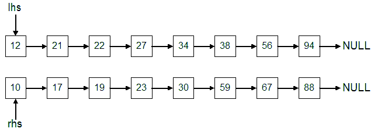
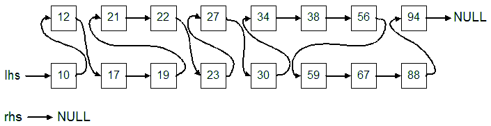

Diagrams


Setup a pointer to the first node of the left list. (left)
Setup a pointer to the first node of the right list (right)
Setup a pointer to point to the head of the new list. (This pointer will only be set once.)
Setup a pointer to point to the tail of the new list. (This will be updated every time you add a node to the new list).
While both pointers (left and right) are pointing at a node
Compare the value of the left node with the right node
If the left node is less than or equal to the right node,
Place the left node in the new list
Move the left pointer to the next node
Else (The left node is greater than the right node)
Place the right node in the new list
Move the right pointer to the next node
End If
End While
If the right side is empty and the left side still has nodes
Add all of the nodes from the left side to the end of the list
If the left side is empty and the right side still has nodes
Add all of the nodes from the right side to the end of the list
Make sure to update any other members before returning.